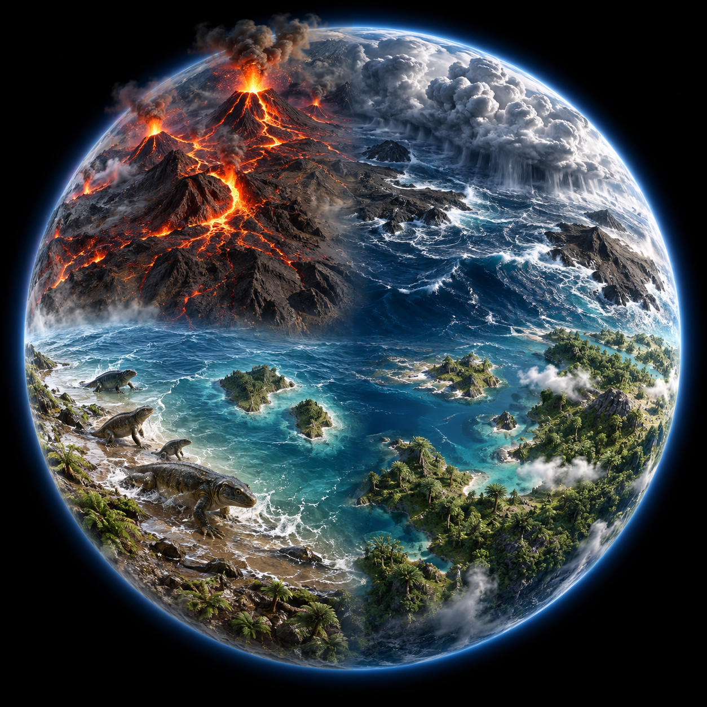
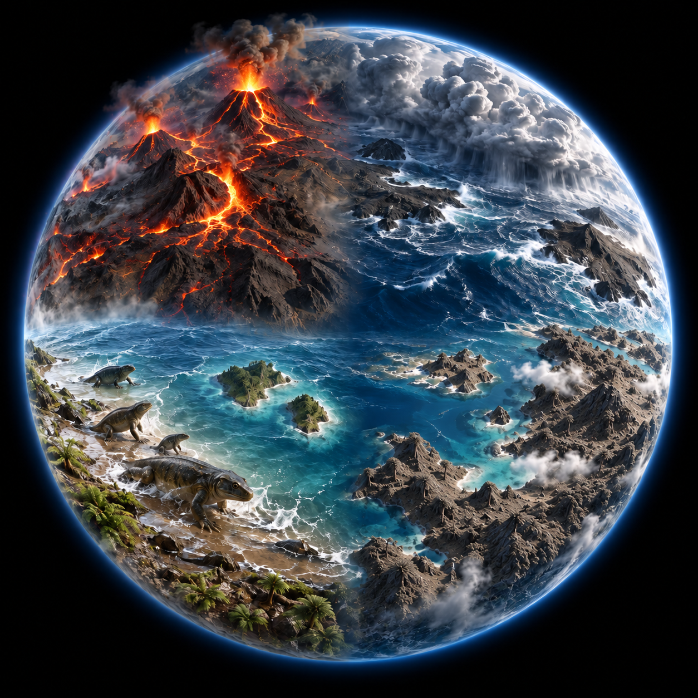

Earth: a world becoming


01
Volcanic Earth
02
The first oceans
03
A greener planet
04
Life steps ashore
×
CHAPTER 01
↻
Replay
Next chapter
↗
A world becoming.
Choose a region. Bring its story to life.
▷
Play the journey